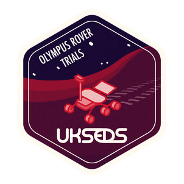

Project HELIA
A BEXUS 39 payload measuring fluorescence in live yeast cells in stratospheric conditions. HELIA flew in October 2026, and its cells survived.
Visit Project HELIA Join the crew ↗
Join the crew ↗Rocket engines, living cells and machines built to explore. Discover the work of Nottingham Space Society.
2025–26 / FLIGHT, TESTS & CONCEPTS
2026–27 / IN DEVELOPMENT
Where new hardware is still in development, competition badges identify the teams.





FROM THE ARCHIVE
A BEXUS 39 payload measuring fluorescence in live yeast cells in stratospheric conditions. HELIA flew in October 2026, and its cells survived.
Visit Project HELIAA regeneratively and film-cooled bipropellant liquid engine designed for 5 kN of thrust. Little John hotfired at Race 2 Space 2026.
Visit Project CRESAn autonomous 3U CubeSat using LiDAR, an inertial measurement unit and QR decoding to characterise mock craters.
Find the project teamA rover designed to traverse simulated Martian terrain and collect, transport and deposit geological samples.
Find the project teamAn inflatable medical research facility concept integrated into Lunar Gateway, entered in the Airbus Space Competition.
Find the project teamThe first year of a five-year pump-fed engine programme, developing an oxygen and isopropyl-alcohol preburner with a target 15 kN hotfire.
Visit Project CRESA liquid-fuelled rocket combining a cooled bipropellant engine, active control and a CanSat payload. The team is targeting EuRoC 2028’s 3 km liquid category.
Find the project teamA CubeSat optical communication payload that produces a laser and keeps it aimed at a target.
Find the project teamA rover mission to photograph geology at the Airbus Stevenage Mars Yard and return images for analysis.
Find the project teamFive teams of first- and second-year students designing, building and flying rockets.
Find the project teamA mission and business proposal for in-orbit servicing, assembly and manufacturing.
Find the project teamA requirements study for a high-speed, long-range suborbital transportation vehicle.
Find the project teamThe society’s 2024–25 CubeSat project.
Find the project teamThe society’s 2023 satellite competition project.
Find the project teamAn earlier society business competition submission.
Find the project team